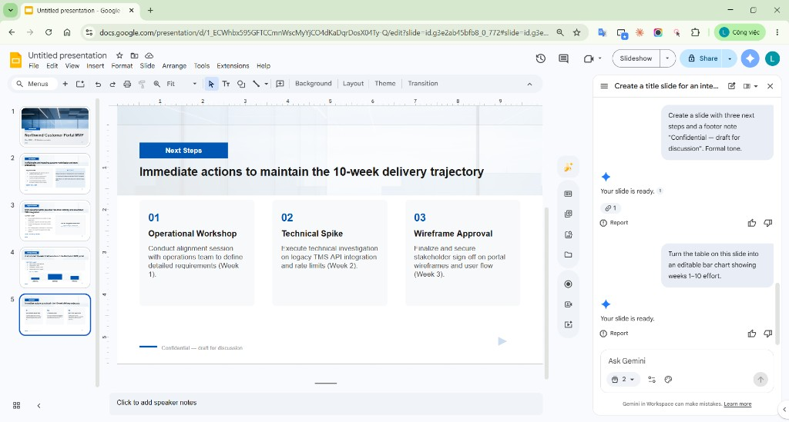

Create a fully native, editable presentation with Gemini in Google Slides
Feature overview, exact full-deck workflow, a reproducible Northwind exercise, observed results, and practical work applications.
1. Overview
Gemini can now build a complete multi-slide presentation from one request. It can ground the deck in Drive content, use another presentation as a style reference, ask clarifying questions, and let the user edit the proposed outline before generation. The resulting slides remain editable in Google Slides.
| Capability | Practical value |
|---|---|
| Full-deck generation | Turns a goal and structure into a multi-slide draft rather than generating one slide at a time. |
| Drive grounding | Uses selected reference files; Gemini may also suggest relevant Drive files, email, or chat for the user to add. |
| Style matching | Uses an existing deck to guide the desired look and feel. |
| Editable plan | Shows Overview, Sources, and slide Steps before generation; users can add, delete, or edit steps. |
| Native output | Users can continue editing the generated deck and refine individual slides or images. |
- Availability: desktop and English only at the time of review.
- Rollout: extended rollout for Rapid and Scheduled Release domains started June 29, 2026 and may take longer than 15 days.
- Plans: Business Standard/Plus, Enterprise Standard/Plus, Google AI Pro/Ultra, Google AI Pro for Education, and AI Expanded Access.
- Admin: no dedicated admin control for this feature.
- Limits: Google announced promotional higher multi-slide limits through at least August 1, 2026; per-user limits apply afterward.
2. Exact workflow
- On a computer, open Google Slides.
- From the start screen, click Presentation; alternatively, in a blank presentation with no existing slides, click Ask Gemini.
- Describe the topic, audience, goal, slide count, structure, and visual requirements.
- Optionally choose Add sources → Add from Drive and attach one or more content references.
- Optionally choose Match presentation style → Add from Drive and attach a style deck.
- Answer or skip Gemini's clarifying questions.
- Click Next. Review the generated Overview, Sources, and slide-by-slide Steps.
- Edit titles/descriptions; use Add step or Delete; click Update plan after changes.
- Click Approve.
- Keep the Slides tab and Gemini panel open while the deck is generated.
- Verify facts and editability, then refine slides, add slides, or add/edit images.
3. Reproducible Northwind exercise
The exercise asks Gemini to produce a six-slide executive approval deck from Project brief — Northwind while matching STYLE_Reference_Deck.
Create a fully editable 6-slide presentation for an internal executive review titled "Northwind Customer Portal MVP". Audience: delivery director, presales lead, operations lead, and solution architect. Goal: approve a 10-week MVP discovery and delivery plan. Required format: title; executive summary; current-state problem; proposed solution; scope and 10-week plan; success metrics, risks, and next steps. Ground every fact in "Project brief — Northwind". Match "STYLE_Reference_Deck". Use native editable text boxes, shapes, diagrams, tables, and charts. Do not invent financial figures, customer quotes, or commitments.
The complete prompt, follow-up answers, outline edits, fallback prompts, source brief, and run log are stored in demo-assets/.
4. Practice process and observed result
Verified: the existing screenshots document a real Northwind practice run using Gemini's native single-slide UI: the operator attached a style deck and project brief, generated and inserted five slides, enhanced layouts, and tested editable objects.
Not yet verified on that tenant: the screenshots predate the full-presentation rollout and therefore do not prove the newer follow-up, plan, Update plan, and Approve screens. The browser session used for this review reached Google sign-in and could not run the account-bound workflow.

images/step-11-five-slide-thumbnail-strip.pngObserved strengths were consistent styling, useful source grounding, and editable slide objects. Manual review was still necessary for content density, diagrams, timelines, and every figure.
5. Full-deck screenshot plan
The Vietnamese guide HUONG-DAN-DEMO-CHUP-ANH.md provides click-by-click instructions. Capture at least:
- Blank presentation and Ask Gemini entry point.
- Content source and style-reference deck.
- Clarifying question and answer.
- Overview and Sources in the plan.
- Edited six-slide outline after Update plan.
- Approve/generating state.
- Completed six-slide filmstrip.
- Object selection handles proving native editability.

images/full-10-native-editable-proof.png6. How I would use it in daily work
I would treat this as a controlled first-draft engine, not as a replacement for a designer or content owner. It is most valuable when a team already has a trusted brief and a clean brand deck but needs a structured presentation quickly.
- Presales: turn an approved brief into a proposal-review deck.
- Weekly reviews: enforce a repeatable progress, risk, decision, and next-step format.
- Training: convert a handbook into editable onboarding material.
- Executive briefs: constrain word count and state the required decision in the prompt.
- Documentation: capture prompt, plan, output, and editability as reproducible evidence.
7. Limits and safeguards
- Rollout timing and per-user limits vary.
- English-only availability may require translation and a second review.
- Grounding reduces but does not eliminate unsupported claims.
- Do not attach confidential or personal data without authorization.
- Native output can still have weak hierarchy, alignment, or chart choices.
- Verify every number, date, name, promise, sharing permission, and accessibility requirement.